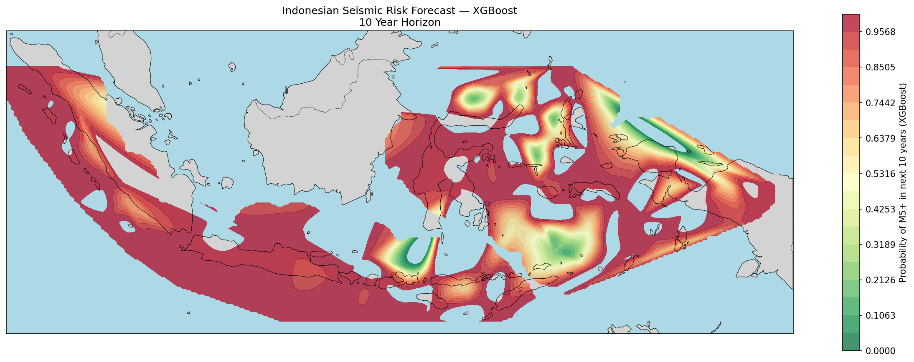
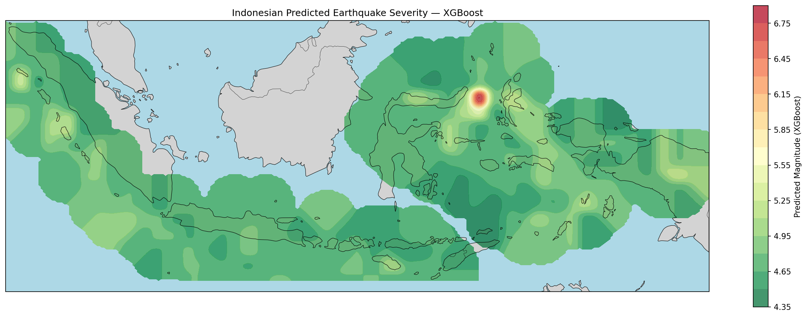

SeisView
INDONESIA
Prediksi Persebaran Gempa

Peta ini menunjukkan prediksi probabilitas terjadinya gempa bumi berkekuatan M5+ di seluruh wilayah Indonesia dalam 10 tahun ke depan menggunakan model XGBoost. Warna merah menunjukkan probabilitas tinggi (mendekati 100%), sedangkan warna hijau menunjukkan probabilitas rendah. Berdasarkan hasil prediksi, wilayah pesisir barat Sumatera, selatan Jawa, Sulawesi, dan Maluku merupakan zona dengan risiko gempa tertinggi, sesuai dengan pola tektonik aktif di Indonesia.
Peta ini dibuat menggunakan model XGBoost dengan pendekatan klasifikasi dan menghasilkan MAE sebesar 0.211 dan RMSE sebesar 0.302, menunjukkan tingkat kesalahan prediksi magnitudo yang cukup rendah.
Prediksi Magnitudo Gempa

Peta ini menunjukkan prediksi seberapa besar ukuran magnitudo gempa bumi yang akan terjadi di seluruh wilayah Indonesia menggunakan model XGBoost dengan pendekatan regresi dan mampu menghasilkan MAE sebesar 0.189 dan RMSE sebesar 0.256, menunjukkan tingkat kesalahan prediksi magnitudo yang cukup rendah.
Warna merah pada peta menunjukkan gempa dengan kekuatan magnitudo yang tinggi, sementara warna hijau menunjukkan gempa dengan kekuatan magnitudo yang rendah.
Berdasarkan hasil prediksi, wilayah pesisir barat Sumatera, selatan Jawa, Sulawesi, dan Maluku mengindikasikan zona dengan risiko gempa bermagnitudo rendah, hal ini menunjukkan kemungkinan tipe gempa yang terjadi adalah gempa dangkal. Sementara itu area berwarna merah pada daerah sekitar timur laut sulawesi mengindikasikan zona dengan risiko gempa bermagnitudo cukup tinggi, hal ini menunjukkan kemungkinan tipe gempa yang terjadi adalah tipe gempa dalam.
Informasi Tambahan
Tentang SeisView
SeisView adalah aplikasi berbasis web yang dirancang untuk memberikan prediksi tentang persebaran dan magnitudo gempa bumi di Indonesia. Aplikasi ini menggunakan model machine learning berbasis XGBoost untuk menganalisis data seismik dan memberikan informasi yang akurat tentang risiko gempa di wilayah Indonesia.
Metode
Metode yang digunakan dalam aplikasi ini adalah machine learning dengan algoritma XGBoost (Extreme Gradient Boosting) untuk memprediksi perkiraan terjadinya gempa dalam rentang waktu 10 tahun mendatang dan prediksi seberapa besar magnitudo gempa yang akan terjadi di wilayah Indonesia.
XGBoost adalah algoritma machine learning yang efektif digunakan untuk tugas regresi dan klasifikasi. Metode ini memiliki tingkat akurasi yang lebih tinggi, lebih efisien dan lebih mudah untuk diinterpretasi dibandingkan dengan metode LSTM (Long Short-Term Memory) ataupun metode Hawkes.
Metode XGBoost yag digunakan ini menggunakan dua pendekatan: regresi untuk memprediksi besar magnitudo gempa yang berpotensi terjadi dan klasifikasi untuk memprediksi probabilitas terjadinya gempa di berbagai wilayah.
Sumber Data
Data yang digunakan dalam aplikasi ini berasal dari USGS (United States Geological Survey) dimana data yang diambil yakni data gempa bumi yang tercatat dalam kurun waktu 10 tahun terakhir (2016-2026) yang terjadi di Indonesia.
Disclaimer!!!
Informasi yang disajikan dalam aplikasi ini bersifat prediktif dan tidak menjamin keakuratan hasil prediksi. Pengguna diharapkan untuk selalu waspada dan mengikuti informasi resmi dari lembaga meteorologi dan geologi terpercaya seperti Badan Meteorologi, Klimatologi, dan Geofisika, USGS (United States Geological Survey) dan lainnya.
Developed by Velia Hanina dan R.A. Qurrota'Ayunin